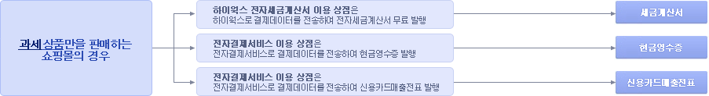
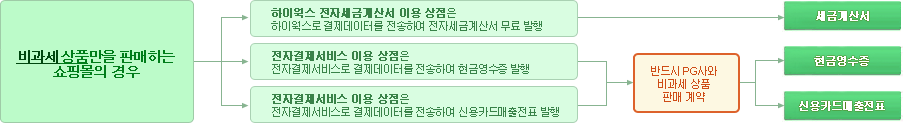

{ #layout_header }
<script type="text/javascript">
$(document).ready(function() {
	<!--{ ? runout }-->
	$("input[name='runout'][value='{runout}']").attr('checked',true);
	<!--{ / }-->
	<!--{ ? cartDuration }-->
	$("select[name='cartDuration'] option[value='{cartDuration}']").attr('selected',true);
	<!--{ / }-->
	<!--{ ? cancelDuration }-->
	$("select[name='cancelDuration'] option[value='{cancelDuration}']").attr('selected',true);
	<!--{ / }-->
	<!--{ ? ableStockStep }-->
	$("input[name='ableStockStep'][value='{ableStockStep}']").attr('checked',true);
	<!--{ / }-->
	<!--{ ? refundDuration }-->
	$("select[name='refundDuration'] option[value='{refundDuration}']").attr('selected',true);
	<!--{ / }-->

	$("input[name='ableStockStep']").change(function(){
		if($(this).is(":checked")){
			$(".ableStockStepImg").hide();
			$("#ableStockStep"+$(this).val()).show();
		}
	}).change();

	//일반 과세사업자 > 세금계산서설정
	$("#biztype_tax").click(function(){
		setPageCont();
		$("#taxuse").val('1');
		$(".taxuselay").show();
		$(".taxuselaynone").hide();
	});

	//간이/면세사업자 세금계산서불가
	$("#biztype_taxexe").click(function(){
		setPageCont();
		$("#taxuse").val('0');
		$(".taxuselay").hide();
		$(".taxuselaynone").show();

	});

	//현금영수증
	$("input[name='cashreceiptuse']").click(function(){
		setPageCont();
		/*
		if( $(this).val() == 2 ){//현금영수증만 사용시
			$("#cashreceiptonlylay").show();
		}else{
			$("#cashreceiptonlylay").hide();
		}
		*/
	});

	//
	$("#hiworks_request").click(function(){
		<!--{? domain=='firstmall.kr' }-->
		alert("임시도메인에는 제공되지 않는 기능입니다. 대표 도메인으로 다시 \n접속해 주세요.\n(대표 도메인이 없으시면 먼저 my가비아에서 도메인 연결 신청을\n해주세요.)");
		return;
		<!--{ / }-->
		$.get('hiworks_request', function(data) {
		  	$('#popup').html(data);
			openDialog("하이웍스 신청 <span class='desc'>&nbsp;</span>", "popup", {"width":"800","height":"630"});
		});
	});

	<!--{ ? cashreceiptuse }-->
		$("input[name='cashreceiptuse'][value='{cashreceiptuse}']").attr('checked',true);
	<!--{ / }-->

	<!--{ ? biztype }-->
		$("input[name='biztype'][value='{biztype}']").attr('checked',true);
	<!--{ / }-->

	<!--{ ? taxuse }-->
		$("input[name='taxuse'][value='{taxuse}']").attr('checked',true);
	<!--{ / }-->

	<!--{ ? hiworks_use }-->
		$("input[name='hiworks_use'][value='{hiworks_use}']").attr('checked',true);
	<!--{ / }-->

	<!--{ ? cashreceipt_auto }-->
		$("input[name='cashreceipt_auto'][value='{cashreceipt_auto}']").attr('checked',true);
	<!--{ / }-->


	<!--{ ? cashreceiptpg }-->
		$("select[name='cashreceiptpg'] option[value='{cashreceiptpg}']").attr('selected',true);
	<!--{ / }-->

	<!--{ ? cashreceipt_date }-->
		$("select[name='cashreceipt_date'] option[value='{cashreceipt_date}']").attr('selected',true);
	<!--{ / }-->


	<!--{ ? sale_reserve_yn }-->
		$("input[name='sale_reserve_yn']").attr('checked',true);
	<!--{ / }-->

		<!--{ ? sale_emoney_yn }-->
		$("input[name='sale_emoney_yn']").attr('checked',true);
	<!--{ / }-->


	$("input[name='hiworks_use'][value='{hiworks_use}']").attr('checked',true);


		/* 저장시 action조정 */
	<!--{ ? config_system.pgCompany }-->
	$("#now_operating").html("{config_system.pgCompany}");
	$(".now_operating2").html("{config_system.pgCompany}");
	<!--{ / }-->

	$("select[name='cartDuration']").bind("change",function(){
		change_setting_msg();
	});

	$("select[name='cancelDuration']").bind("change",function(){
		change_setting_msg();
	});

	$("select[name='refundDuration']").bind("change",function(){
		change_setting_msg();
	});

	<!--{ ? cutting_price }-->
	$("select[name='cutting_price'] option[value='{config_system.cutting_price}']").attr('selected',true);
	<!--{ / }-->

	change_setting_msg();

	setPageCont();


	$("#comment").click(function(){
		openDialog("매출증빙 자료 처리 방법에 대한 설정 안내", "comment_pop", {"width":"750","height":"320","show" : "fade","hide" : "fade"});
	});

	$("#comment_cash").click(function(){		
		openDialog("현금영수증 중복발행 유의사항", "comment_cash_pop", {"width":"900","height":"1000","show" : "fade","hide" : "fade"});
		view_comment_cash_info();
	});
	$("input[name='comment_cash_info']").click(function(){
		view_comment_cash_info();
	});	
});

function change_setting_msg(){
	$("#b_layer").html($("select[name='cartDuration']").val());
	$("#c_layer").html($("select[name='cancelDuration']").val());
	$("#f_layer").html($("select[name='refundDuration']").val());
}

function setPageCont(){
	// CARD
	var pg = "{config_system.pgCompany}";
	if(!pg){
		$(".td_card").css("background","#efefef");
		$(".td_card").css("color","#AAAAAA");
		$(".td_card input,select").attr("readonly",true);
		$(".td_card input,select").css("background","#efefef");
		$(".td_card input,select").css("color","#AAAAAA");
		$(".td_card input[type='checkbox']").attr("disabled",true);
	}else{
		$(".td_card").css("background","#FFFFFF");
		$(".td_card").css("color","#000000");
		$(".td_card input,select").attr("readonly",false);
		$(".td_card input,select").css("background","#FFFFFF");
		$(".td_card input,select").css("color","#000000");
		$(".td_card input[type='checkbox']").attr("disabled",false);
	}
	// CASH
	var cash = $("input[name='cashreceiptuse']:checked").val();
	if(cash!=1){
		$(".td_cash").css("background","#efefef");
		$(".td_cash").css("color","#AAAAAA");
		$(".td_cash input,select").attr("readonly",true);
		$(".td_cash input,select").css("background","#efefef");
		$(".td_cash input,select").css("color","#AAAAAA");
		$(".td_cash input[type='checkbox']").attr("disabled",true);	
	}else{
		$(".td_cash").css("background","#FFFFFF");
		$(".td_cash").css("color","#000000");
		$(".td_cash input,select").attr("readonly",false);
		$(".td_cash input,select").css("background","#FFFFFF");
		$(".td_cash input,select").css("color","#000000");
		$(".td_cash input[type='checkbox']").attr("disabled",false);
	}
	// TAX
	var tax = $("input[name='biztype']:checked").val();
	if(tax!="tax"){
		$(".td_tax").css("background","#efefef");
		$(".td_tax").css("color","#AAAAAA");
		$(".td_tax input,select").attr("readonly",true);
		$(".td_tax input,select").css("background","#efefef");
		$(".td_tax input,select").css("color","#AAAAAA");
		$(".td_tax input[type='checkbox']").attr("disabled",true);
	}else{
		$(".td_tax").css("background","#FFFFFF");
		$(".td_tax").css("color","#000000");
		$(".td_tax input,select").attr("readonly",false);
		$(".td_tax input,select").css("background","#FFFFFF");
		$(".td_tax input,select").css("color","#000000");
		$(".td_tax input[type='checkbox']").attr("disabled",false);
	}

}

function viewCont(status){
	if(status=="show"){
		$("#h_cont").show();
	}else{
		$("#h_cont").hide();
	}
}

function view_comment_cash_info(){
	var sel = $("input[name='comment_cash_info']:checked").val();	
	$(".comment_cash_info").addClass("hide");
	$("#comment_cash_info_"+sel).removeClass("hide");
	$("div.ui-dialog-content").height($("#comment_cash_info_"+sel).height()+590);
}
</script>
<style>
ul.cash_info_contents li {padding-top:5px;}
</style>
<form name="settingForm" method="post" enctype="multipart/form-data" action="../setting_process/sale" target="actionFrame">
<!-- 페이지 타이틀 바 : 시작 -->
<div id="page-title-bar-area">
	<div id="page-title-bar" class="gray-bar">
		{#require_info}

		<!-- 타이틀 -->
		<div class="page-title">
			<h2><span class="darkgray">설정 →</span> 매출증빙</h2>
		</div>

		<!-- 우측 버튼 -->
		<ul class="page-buttons-right">
			<li><span class="btn large black"><button  {? isdemo.isdemo }  type="button" {isdemo.isdemojs1} {:} type="submit" {/}>저장하기<span class="arrowright"></span></button></span></li>
		</ul>

	</div>
</div>
<!-- 페이지 타이틀 바 : 끝 -->

<!-- 서브 레이아웃 영역 : 시작 -->
<div class="sub-layout-container body-height-resizing">

	<!-- 서브메뉴 탭 : 시작 -->
	{ #setting_menu }
	<!-- 서브메뉴 탭 : 끝 -->

	<!-- 서브메뉴 바디 : 시작-->
	<div class='slc-body-wrap body-height-resizing'>
		<div class="slc-body">

			<div class="item-title">매출 증빙 설정 <span class="helpicon" title="쇼핑몰에서 물품을 구입한 소비자가(개인이나 사업자) 일정 금액을 지출했음을 증빙하는 것으로 카드매출전표, 현금영수증, 세금계산서등이 속합니다.<br>소비자가 요청했을 때 자동이나 수동으로 발급되며 하나의 거래건에 대해 한가지 서류만 발급할 수 있습니다.(즉 세금계산서가 발급되면 카드매출전표나 현금영수증을 발행해서는 안됩니다.)<br><br>
			카드매출전표: 결제수단이 ‘카드’ 인 경우 PG 사를 통해 자동으로 발급이 되며, 세금계산서나 현금영수증을 발행할 수 없습니다.. (PG 사 계약 필요),<br>
			세금계산서: 일반과세자만 발행할 수 있으며 전자세금계산서로 발행하시거나 수기로 발행하시면 됩니다.<br>
			현금영수증: 현금성 거래에 대해서 발급을 할 수 있으며 PG사와 전자 결제 계약 후 이용할 수 있습니다. 현금영수증만 PG와 계약 없이 이용하시려면 PG사와 현금영수증 부분만 따로 계약-신용카드나 가상계좌 등의 결제수단을 사용하는 계약이 아니라 현금영수증만 이용한다는 계약을 하시면 됩니다.<br><br>
			현금영수증만 이용하는 계약을 하셨을 경우 PG 사에서 제공하는 관리자 페이지에서 수동으로 현금 영수증을 발급할 수 있습니다."></span></div>

			<div style="padding-left:30px;padding-bottom:30px;">
			<table width="100%" cellpadding="0" cellspacing="0">
			<tr>
				<td width="400"><span style="color:red;letter-spacing:-1px;">반드시 아래 3가지 경우의 설명을 정독한 후에 매출증빙설정을 하시기 바랍니다.<br>그래야만 매출증빙자료의 물품가격과 부가세가  정상 동작합니다.</span></td>
				<td align="left"></td>
			</tr>
			<tr><td colspan="2" height="20"></td></tr>
			<tr><td colspan="2"></td>
			<tr><td colspan="2" height="20"></td></tr>
			<tr><td colspan="2"></td>
			<tr><td colspan="2" height="20"></td></tr>
			<tr><td colspan="2"></td>
			</table>
			</div>


<!--
			<div style="padding:0px 0px 10px 30px;" >
			아래 매출증빙 세팅에 따라 접수되는 매출증빙 자료는 관리환경 > 주문 > <a href="/admin/order/sales" target="_blank"><span class=" highlight-link hand">매출증빙리스트</span></a>에서 모두 확인하고 관리 할 수 있습니다.<br>
			전자결제(PG)를 이용(관리환경 > 설정 > <a href="/admin/setting/pg" target="_blank"><span class=" highlight-link hand">전자결제</span></a>)하면 카드매출전표는 당연히 자동으로 발행됩니다.<br>
			현금영수증도 전자결제(PG)사의 현금영수증 서비스를 이용할 수 있습니다. 단, PG사별 현금영수증 신청방법은 아래와 같습니다.<br>
			- 이니시스 : PG계약을 완료하면 별도의 신청 없이 현금영수증 서비스 이용 가능<br>
			- KCP, LG U+ : 반드시 해당 PG사의 관리환경에서 현금영수증 서비스를 신청하여야만 이용 가능<br>
			- 삼성올앳 : 별도의 신청서류를 작성하여 현금영수증 서비스를 신청하여야만 이용 가능
			</div>
-->


			<table width="100%" class="info-table-style">
			<col width="120" />
			<col style="min-width:120px;"/>
			<col style="min-width:100px;"/>
			<col width="380" />
			<col style="min-width:80px;"/>
			<col style="min-width:130px;"/>
			<tr>
				<th class="its-th">매출증빙 종류</th>
				<th class="its-th">① 사용 여부</th>
				<th class="its-th">② 접수 방법</th>
				<th class="its-th">③ 처리 방법 <span class="btn small orange"><button type="button" id="comment">설정 안내</button></span></th>
				<th class="its-th">④ 증빙금액</th>
				<th class="its-th">⑤ 처리위치</th>
			</tr>
			<tr>
				<th class="its-th">세금계산서</th>
				<td class="its-td-align left" style="padding-left:10px;" valign="top">
					<label>
						<input type="radio" name="biztype" id="biztype_tax" value="tax" checked="checked" />
						일반 과세사업자
					</label>
					<br />
					<label>
						<input type="radio" name="biztype" id="biztype_taxexe" value="tax_exempt" />
						간이/면세사업자
					</label>
					<input type="hidden" name="taxuse" id="taxuse" value="{? biztype == 'tax' }1{:}0{/}" >
				</td>
				<td class="its-td-align left td_tax" style="padding-left:10px;" valign="top">
					경우1) 소비자가 주문시 신청<br>
					경우2) 소비자가 MY페이지에서 신청<br>
					경우3) 관리자가 신청
				</td>
				<td class="its-td-align left td_tax" style="padding-left:10px;" valign="top">
					<input type="radio" name="hiworks_use" value="Y" class="hide" checked/>
					<span style="color:red;"> 하이웍스(메일)와 연동해서 처리(아래 연동정보를 넣을 때만 가능)</span>

					<div style="border:1px solid #aaaaaa;padding:10px 10px 0 10px;width:340px;">
						<table width="100%" class="info-table-style">
						<col width="100" /><col width="" />
						<tr>
							<th class="its-th-align center">신청도메인</th>
							<td class="its-td"><input type="text" name="webmail_domain" value="{webmail_domain}" style="width:200px;"  {? isdemo.isdemo } {isdemo.isdemodisabled} {/} ></td>
						</tr>
						<tr>
							<th class="its-th-align center">하이웍스ID</th>
							<td class="its-td"><input type="text" name="webmail_admin_id" value="{webmail_admin_id}" style="width:200px;"  {? isdemo.isdemo } {isdemo.isdemodisabled} {/} ></td>
						</tr>
						<tr>
							<th class="its-th-align center">연동키<div style="color:red;font-weight:bold;" class="hand" onmouseover="viewCont('show');" onmouseout="viewCont('hide');"><u>※ 입력 안내</u></div>
							<div style="background:#ffffff;border:2px solid #000000;padding:10px;position:absolute; z-index:999;text-align:left;" id="h_cont" class="hide">1. 상단의 웹메일/세금계산서 클릭<br>
							2. 로그인 후 전자세금계산서 메뉴로 이동<br>
							3. 좌측의 세금계산서 연동정보 클릭<br>
							4. 연동키 확인 후 입력</div>
							</th>
							<td class="its-td"><input type="text" name="webmail_key" value="{webmail_key}" style="width:200px;"  {? isdemo.isdemo } {isdemo.isdemodisabled} {/} /></td>
						</tr>
						</table>
						<div style="width:100%;line-height:17px;margin-top:5px;">
							만약 하이웍스(메일)를 신청하지 않으셨다면 MY가비아> 쇼핑몰관리 에서 신청하시면 됩니다. <br/>
							<a href="http://firstmall.kr/myshop/" target="_blank" style="font-weight:bold;color:#3366ff;">하이웍스(메일) 신청하기▶</a>
						</div>
					</div>
					<!--label><input type="radio" name="hiworks_use" value="N" checked />수동 처리</label-->
				</td>
				<td class="its-td-align left td_tax" valign="top" style="padding-left:10px; padding-top:5px;" width="200">
					<label>
						<input type="checkbox" name="sale_reserve_yn" value="Y">
						적립금 포함
					</label>
					<br/>
					<label>
						<input type="checkbox" name="sale_emoney_yn" value="Y">
						이머니 포함
					</label>
					<br/>
					<br/>					
				</td>
				<td class="its-td-align left" style="padding-left:10px;" rowspan="3">
					주문 > <a href="/admin/order/sales" target="_blank"><span class=" highlight-link hand">매출증빙리스트</span></a><br/>
					에서 모든 매출증빙 자료를 확인하고 처리	할 수 있습니다.
				</td>
			</tr>
			<tr>
				<th class="its-th">현금영수증</th>
				<td class="its-td-align left" style="padding-left:10px;" valign="top">
					
					<!--{ ? !config_system.pgCompany }-->
					전자결제(PG) 미사용 중 →					
					<label>
						<input type="radio" name="cashreceiptuse"  id="cashreceiptuse0" value="0" checked="checked" />
						미발급
					</label>
					<!--{ : }-->
					전자결제(PG) 사용 중 →
					<label>
						<input type="radio" name="cashreceiptuse"  id="cashreceiptuse1" value="1" />
						발급
					</label>
					<label>
						<input type="radio" name="cashreceiptuse"  id="cashreceiptuse0" value="0" checked="checked" />
						미발급
					</label>
					<span class="btn small orange"><button type="button" id="comment_cash">필독) 중복발행 유의사항</button></span>
					<!--{ / }-->

					
				</td>
				<td class="its-td-align left td_cash" style="padding-left:10px;" valign="top">
					경우1) 소비자가 주문할 때 신청<br>
					경우2) 소비자가 MY페이지에서 신청<br>
					경우3) 관리자가 신청
				</td>
				<td class="its-td-align left td_cash" style="padding-left:10px;" valign="top">
					<input type="radio" name="cashreceipt_auto" value="Y" class="hide" checked/>전자결제 서비스(PG)와 연동하여 처리<br>
					(결제확인시 PG로 현금영수증 발행 정보를 자동으로 보내서 처리.<br>단 관리자 신청시에는 관리자가 수동으로 버튼 클릭해서 전송)
				</td>
				<td class="its-td-align left td_cash" valign="top" style="padding-left:10px; padding-top:5px;" width="200">
					적립금 미포함<br>
					이머니 미포함				
				</td>
			</tr>
			<tr>
				<th class="its-th">카드매출전표</th>
				<td class="its-td-align left" style="padding-left:10px;" valign="top">
				<!--{ ? !config_system.pgCompany }-->
					전자결제(PG) 서비스 미사용 중
				<!--{ : }-->
					전자결제(PG) 서비스 사용 중
				<!--{ / }-->
					<!--전자결제(PG) 서비스 사용(<span class="bold fx16 blue now_operating2"></span>) 중-->
				</td>
				<td class="its-td-align left td_card" style="padding-left:10px;" valign="top">
					소비자가 신용카드 결제할 때
				</td>
				<td class="its-td-align left td_card" style="padding-left:10px;" valign="top">
					신용카드 결제가 성공하면 자동 생성
				</td>
				<td class="its-td-align left td_card" style="padding-left:10px;" valign="top">
					적립금 미포함<br>
					이머니 미포함
				</td>
			</tr>
			</table>


 	</div>
	<!-- 서브메뉴 바디 : 끝 -->

</div>
<!-- 서브 레이아웃 영역 : 끝 -->

</form>

<div id="popup" class="hide"></div>

<div id="comment_pop" class="hide">
	<div style="background:#efefef;padding:10px;">
	<table width="100%" cellpadding="0" cellspacing="0">
	<tr><td height="25"><b>■ 세금계산서 처리 방법은 2가지입니다.</b></td></tr>
	<tr>
		<td>
		1) 하이웍스 전자세금계산서 서비스 연동 : 세금계산서 신청 정보를 하이웍스로 전송하여 전자세금계산서 발행을 처리하는 방법<br>
		단, 시스템 연동을 위하여 하이웍스 서비스를 신청 해 주세요.<br>
		2) 미연동 처리 : 관리자가 알아서 세금계산서를 처리합니다. 고객이 발급된 세금계산서를 MY페이지에서 조회할 수 없습니다.
		</td>
	</tr>
	<tr><td height="25"><b>■ 현금영수증 처리 방법은 2가지입니다.</b></td></tr>
	<tr>
		<td>
		1) 전자결제(PG) 서비스 연동하여 처리 : 전자결제(PG) 서비스사의 현금영수증 서비스에서 현금영수증 발행을 처리하는 방법<br>
		단, 시스템 연동을 위하여 전자결제(PG) 서비스사에 현금영수증 서비스를 신청 해 주세요.<br>
		- KCP, LG U+ : 받드시 해당 PG사의 관리환경에서 현금영수증 서비스를 신청하여야만 현금영수증 이용 가능<br>
		- 이니시스 : PG계약을 완료하면 별도의 신청 없이 현금영수증 서비스 이용 가능<br>
		- 삼성올앳 : 별도의 신청서류를 작성하여 신청하여야만 현금영수증 이용 가능<br>
		2) 미연동 처리 : 관리자가 알아서 현금영수증을 처리합니다. 고객이 발급된 영수증을 MY페이지에서 조회할 수 없습니다.
		</td>
	</tr>
	<tr><td height="25"><b>■ 카드매출전표 처리 방법은 1가지입니다.</b></td></tr>
	<tr>
		<td>
		1) 전자결제(PG) 서비스 이용(설정 > <a href="/admin/setting/pg" target="_blank"><span class=" highlight-link hand">전자결제</span></a>)하면 카드매출전표는 당연히 자동 발행됩니다.
		</td>
	</tr>
	</table>
	</div>
</div>

<div id="comment_cash_pop" class="hide">
	
	<div class="bold">중복발행 되는 경우</div>
	<div style="padding-top:15px;"></div>
	<table width="100%" cellpadding="0" cellspacing="0">	
	<tr>
		<td>
			<ul class="cash_info_contents">
				<li>
					구매자가 결제페이지에서 현금영수증 신청하고 결제창에서도 현금영수증 신청하는 경우 현금영수증이 중복발행 됩니다.
				</li>
				<li>
					그러므로 결제창에서는 현금영수증이 신청되지 않도록 조치해 주시기 바랍니다.
				</li>
			</ul>	
		</td>
	</tr>
	<tr><td height="14"></td></tr>
	<tr>
		<td>
			<div>
				
			</div>
		</td>
	</tr>	
	</table>

	<div style="padding-top:50px;"></div>
	<div class="bold">전자결제(PG)별 결제창에서의 현금영수증 신청 제어 방법</div>
	<div style="padding-top:20px;"></div>

	<div>
	<table width="100%" cellpadding="0" cellspacing="0">	
	<tr>
		<td>
		<label>
			<input type="radio" name="comment_cash_info" value="kcp" {?config_system.pgCompany == 'kcp'}checked{/} />
			KCP 이용 상점
		</label>
		<span class="pdl5"></span>
		<label>
			<input type="radio" name="comment_cash_info" value="inicis" {?config_system.pgCompany == 'inicis'}checked{/} />
			이니시스 이용 상점
		</label>
		<span class="pdl5"></span>
		<label>
			<input type="radio" name="comment_cash_info" value="lg" {?config_system.pgCompany == 'lg'}checked{/} />
			LG U+ 이용 상점
		</label>
		<span class="pdl5"></span>
		<label>
			<input type="radio" name="comment_cash_info" value="allat" {?config_system.pgCompany == 'allat'}checked{/} />
			올앳 이용 상점
		</label>
		<span class="pdl5"></span>
		<label>
			<input type="radio" name="comment_cash_info" value="ksnet" {?config_system.pgCompany == 'kspay'}checked{/} />
			KSNET 이용 상점
		</label>
		</td>
	</tr>
	<tr><td height="14"></td></tr>
	<tr><td style="height:1px;background-color:#dadada"></td></tr>
	<tr><td height="15"></td></tr>
	<tr>
		<td>
			<div id="comment_cash_info_kcp" class="comment_cash_info">
				<ul class="cash_info_contents">
					<li>
						KCP관리자페이지(<a href="http://admin.kcp.co.kr" target="_blank"><span class="blue">http://admin.kcp.co.kr</span></a>)에서 현금영수증 발급 설정을 “사용안함”으로 변경하여 주세요.
					</li>					
				</ul>
				
				<div style="padding-top:16px;"></div>
				<div style="border-top:1px dashed #dddddd;width:100%;"></div>
				<div style="padding-top:36px;"></div>
				<div>
					
				</div>
			</div>
			<div id="comment_cash_info_inicis" class="comment_cash_info" class="hide">				
				<ul class="cash_info_contents">
					<li>
						KG Inicis관리자페이지(<a href="https://iniweb.inicis.com" target="_blank"><span class="blue">https://iniweb.inicis.com</span></a>)에서 현금영수증 사용 설정을 “자진발급”에 체크를 풀어주세요.
					</li>
					<li>
						KG Inicis는 일반결제와 에스크로결제 관리자가 분리되어 있어, 일반결제 관리자 계정과 에스크로관리자 계정에 각각 로그인하여 “자진발급”에 체크를 풀어주셔야 합니다.
					</li>
				</ul>
				<div style="padding-top:16px;"></div>
				<div style="border-top:1px dashed #dddddd;width:100%;"></div>
				<div style="padding-top:36px;"></div>
				<div>
					
				</div>
			</div>
			<div id="comment_cash_info_lg" class="comment_cash_info" class="hide">			
				<ul class="cash_info_contents">
					<li>
						LG U+ 이용 상점은 사용안함으로 자동 설정되어 있기 때문에 별도 설정이 필요하지 않습니다.
					</li>					
				</ul>
			</div>
			<div id="comment_cash_info_allat" class="comment_cash_info" class="hide">
				<ul class="cash_info_contents">
					<li>
						올엣 고객센터(02-3783-9990 )에 현금영수증 자진발급 사용 제한을 요청하여 주셔야 합니다.
					</li>					
				</ul>
			</div>		

			<div id="comment_cash_info_ksnet" class="comment_cash_info" class="hide">
				<ul class="cash_info_contents">
					<li>
						KSNET 이용 상점은 사용안함으로 자동 설정되어 있기 때문에 별도 설정이 필요하지 않습니다.
					</li>					
				</ul>
			</div>			
		</td>
	</tr>	
	</table>
	</div>
</div>

{ #layout_footer }